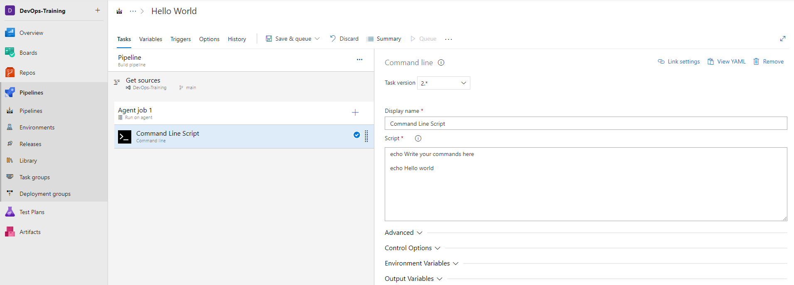

Continuous Integration and Continuous Deployment (CI/CD) with Azure DevOps  ¶
¶
Azure DevOps is a comprehensive cloud-based platform by Microsoft that offers end-to-end CI/CD capabilities integrated with Azure services.
Components for Azure DevOps:¶
- Boards 📊
- Repositories 📂
- Pipelines 🌐
- Artifacts 📦
- Test Plans 🧪
Real-Time Use Case:¶
Azure DevOps is best suited for enterprises using Microsoft technologies and Azure cloud services, as it seamlessly integrates with these tools.
Mostly Used For:¶
- Full-Stack Application Development
- Automated Testing and Deployment
- Project Management and Collaboration
Microsoft Hosted Vs Self Hosted  ¶
¶
Azure DevOps allows you to choose between Microsoft-hosted and self-hosted agents for your CI/CD pipelines.
-
Microsoft-hosted agents are provided and maintained by Microsoft. They are suitable for most scenarios and offer a wide variety of pre-installed tools and environments.
-
Self-hosted agents are agents that you set up and maintain in your own infrastructure. This option provides more flexibility and control, allowing you to use specific tools and environments tailored to your needs.
Understanding Azure Artifacts and Its Use Cases¶
What are Azure Artifacts¶
Azure Artifacts is a vital component of Azure DevOps services that facilitates the storage, publication, and sharing of various package types, such as NuGet, npm, Maven, and more. It serves as a centralized repository for managing and distributing packages used in software development projects.
Pipeline Artifacts vs Azure Artifacts: Differences and Best Practices¶
When working with Azure DevOps, it's essential to distinguish between Pipeline Artifacts and Azure Artifacts and understand when to leverage each of them effectively.
Pipeline Artifacts¶
Pipeline Artifacts are primarily focused on compiling and packaging source code into artifacts. These pipelines are typically triggered on code commits and serve purposes like compilation, unit testing, and artifact creation. They are best suited for scenarios where you need to create and store build-specific artifacts generated during the build process.
Azure Artifacts¶
Azure Artifacts, in contrast, offer a more comprehensive package management solution. They are designed to store and manage packages and dependencies used in your software development projects. Azure Artifacts support various package types like NuGet, npm, Maven, and more. They are ideal for managing libraries, dependencies, and third-party packages that your projects depend on.
When to Use Each¶
-
Pipeline Artifacts: Utilize Pipeline Artifacts when you need to create and store build-specific artifacts like compiled binaries, libraries, or any output generated during the build process. These artifacts are often specific to a particular build and are used for deployment or further testing.
-
Azure Artifacts: Opt for Azure Artifacts when you need to manage packages and dependencies across multiple projects or teams. They provide a centralized repository for storing and sharing packages, streamlining consistency and version control across your organization's software development efforts.
Build and Release Pipelines in Azure DevOps  ¶
¶
Azure DevOps offers two distinct types of pipelines: Build Pipelines and Release Pipelines.
Build Pipelines¶
Build Pipelines are dedicated to compiling and packaging source code into artifacts. They are typically triggered on code commits and are employed for tasks such as compilation, unit testing, and artifact creation.
Release Pipelines¶
Release Pipelines take charge of the deployment and release of applications. They utilize artifacts created by build pipelines and deploy them to various environments, such as development, testing, and production.
Real-Time Use Case for Build and Release Pipelines  ¶
¶
Use Case: Consider an e-commerce company that develops a web application. They rely on Azure DevOps Build Pipelines to compile their code, run automated tests, and create deployable artifacts. Once the artifacts are ready, Release Pipelines come into play, deploying the application to multiple environments. This ensures that each deployment is consistent and automated.
By strategically incorporating Build and Release Pipelines in Azure DevOps, the company streamlines their development process, minimizes manual errors, and ensures that their application is continuously delivered and updated with minimal human intervention.
Installation Process:¶
- Sign in to Azure DevOps or create an account.
- Create a new project within Azure DevOps.
- Set up repositories and define your code version control strategy.
- Configure CI/CD pipelines using YAML or the visual designer.
- Link your pipelines to source code repositories.
- Trigger your pipelines manually or automatically on code changes.
Creating a Basic Pipeline to Run Hello World  ¶
¶
Classic (Visual Designer) Method:¶
- In your Azure DevOps project, navigate to "Pipelines."
- Click on "New Pipeline" to create a new pipeline.
- Connect to your source code repository.
- Choose the "Classic Editor" option to use the visual designer.
- Follow these steps to create a simple "Hello, World!" pipeline:
a. Agent Pool: Select an agent pool (e.g., "Azure Pipelines").
b. Agent Specification: Choose an agent specification (e.g., "ubuntu-latest").
c. Tasks: Click on the "+" icon to add a new task.
d. Agent Job: Select the "Agent job" task from the list.
e. Display Name: Set the display name to "Print Hello World."
f. Script: In the script box, enter the command to print "Hello, World!" (e.g., echo 'Hello, World!').

- Save and run your pipeline.
YAML Method:¶
trigger:
- main
pool:
vmImage: 'ubuntu-latest'
steps:
- script: echo 'Hello, World!'
displayName: 'Print Hello World'
To create a pipeline using YAML configuration:
- In your Azure DevOps project, navigate to "Pipelines."
- Click on "New Pipeline" to create a new pipeline.
- Connect to your source code repository.
- Choose the "YAML" option to define your pipeline in code.
- Copy and paste the provided YAML configuration.
- Save and run your pipeline.
Both methods will create a basic pipeline that prints "Hello, World!" when executed. You can choose the method that best suits your preference and workflow.
How to Integrate Other Cloud or Tools Using Service Connections  ¶
¶
Azure DevOps allows you to integrate with other cloud services and tools through service connections. Examples of service connections include connecting to AWS for cloud deployment or integrating with Jira for issue tracking.
To set up service connections: 1. In your Azure DevOps project, go to "Project Settings." 2. Under "Service connections," create a new connection. 3. Select the type of service or tool you want to connect to. 4. Follow the setup instructions provided for the specific service or tool.
What Are Variable Groups  ¶
¶
Variable groups in Azure DevOps allow you to define and manage sets of variables that you can use across multiple pipelines. This helps maintain consistency and simplifies configuration management.
Example: You can create a variable group for database connection strings and use it in multiple pipelines to ensure uniform database settings.
What Are Task Groups  ¶
¶
Task groups in Azure DevOps allow you to encapsulate a sequence of tasks into a single reusable entity. This simplifies the management of complex pipelines by promoting reusability and maintaining consistency.
Example: You can create a task group for deploying microservices and reuse it across different deployment pipelines for various microservices in your application.
Tool Comparisons:¶
Azure DevOps provides a seamless integration of CI/CD with Azure services, making it an excellent choice for organizations invested in the Microsoft ecosystem. It offers robust project management features but may have a steeper learning curve compared to GitHub Actions or Jenkins.